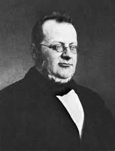
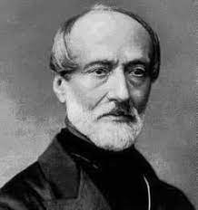

GARIBALDI:
Giuseppe Garibaldi, n. 4 iulie 1804, Nisa, Franța - m. 2 iunie 1882, Caprera, o mică insulă din Marea Tireniană, în nord-estul Sardiniei; general şi om politic italian
„Reprezentant de frunte al generației revolutionar-democrate europene de la jumătatea secolului al XIX-lea, figură legendară a epopeii unificării Italiei, Garibaldi a fost și un talentat organizator şi comandant militar, calități potențate de țelul superior al luptei de eliberare.
Experimentat în acțiuni de avangardă, în atacuri imprevizibile, în marşuri forţate, a pregătit şi a condus o foarte bună armată revoluționară, ale cărei inerente carente de dotare și instruire le-a suplinit prin elan şi suplețe în gândirea tactică."
CAVOUR:
Camillo Benso, Conte de Cavour, n. 10 august 1810, Torino - m. 6 iunie 1861, Torino; om politic italian, prim-ministru al Regatului Sardiniei, 1852 - 1860, şi al Regatului Italiei unificate, martie-iunie 1861.
Cavour se va dovedi un foarte bun administrator al afacerilor statului, atât ca ministru (al agriculturii şi, totodată, al finanțelor) în guvernul condus de Massimo Azeglio, cât şi ca prim-ministru (şi ministru al finanțelor), sub Victor Emanuel al II-lea, moder- nizând infrastructura, continuând reforma Codului penal și ducând o politică anticlericală. Urmărind alungarea austriecilor, se aliază cu împăratul francez Napoleon al III-lea, cedând Nisa și Savoia - fapt pentru care va intra în conflict cu Garibaldi, care le considera teritorii italiene - şi primind în schimb Emiglia- Romagna şi Toscana.Apreciat drept principalul artizan al unificării italiene, realizată prin proclamarea Regatului Italiei la 14 martie 1861, Cavour nu se va putea bucura de ea, murind la scurt timp după aceea.

MUSSOLINI:
Benito Mussolini, Benito Amilcare Andrea Mussolini, n. 29 iulie 1883, Predappio, provincia Emilia Romagna - m. 28 aprilie 1945, Giulino de Mezzegra, în apropiere de Dongo, provincia Como; om politic italian, dictator fascist 1922-1943.Benito Mussolini a avut o atitudine agresivă, în sprijinul politicii mare nostrum (Marea Mediterană trebuie să fie în posesia Italiei): Libia transformată în provincie italiană (1939), invadarea Abisiniei (1935-1936) şi a Albaniei (1939), sprijinirea dictatorului spaniol Francisco Franco în „Războiul Civil" din Spania etc. In condițiile în care Germania pierdea teren pe fronturile de luptă, Mussolini este demis din funcție chiar de propriul său Mare Consiliu Fascist (iulie 1943), cu acordul regelui, şi încarcerat undeva în Munții Abruzzi. Încercând să fugă în Elveția, este prins de partizani şi împuşcat, apoi spânzurat, împreună cu amanta sa, Clara Petacci, în Piazzale Loreto din Milano (28 aprilie 1945).
MAZZINI:
Giuseppe Mazzini, n. 1805 sau 1808, Genova - m. 1872, Pisa; revoluţionar şi om politic italian
Încă foarte tânăr fiind, suspectat de carbonarism, este arestat, închis și apoi expulzat din Italia, refugiindu-se în Franța (1831), unde a fondat mişcarea Tânăra Italie", care avea ca obiectiv eliberarea şi unificarea Italiei ca republică. Ideile sale erau opuse celor liberale ale filozofului și omului politic Vincenzo Gioberti (1801-1852), care era adeptul unei federații italiene sub sigla Papei. Va cunoaște o viață agitată, plină de conspirații, toate ratate, de mai multe ori autoexilat, prima dată în Marea Britanie (Londra), în 1835, a doua oară în Elveţia şi Marea Britanie (1849), între timp înrolându-se în trupele generalului Garibaldi şi devenind pentru scurt timp unul dintre triumvirii efemerei Republici Romane (martie-iulie 1849); refugiat la Londra, va fonda, împreună cu revoluţionarii Lajos Kossuth (maghiar) şi | Alexandre Auguste Ledru-Rollin (francez), Alianța Republicană Universală (1868).
Reîntors în Italia pentru ultima oară (1870), cu scopul de a pregăti proclamarea republicii, va fi arestat, condamnat, apoi amnistiat. Moare la scurtă vreme după aceea (1872).
